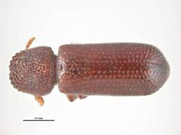
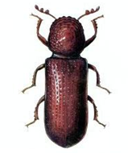
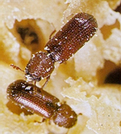

| Home |
| SUGARCANE |
PRIMARY STORAGE PEST |
INTERNAL FEEDERS |
| 1. Rice weevil |
| 2. Lesser grain borer |
| 3. Angoumois grain moth |
| 4. Pulse beetle |
| 5. Cigarette beetle |
| 6. Drug store beetle |
| 7. Tamarind Beetle |
| 8. Sweet Potato weevil |
| 9. Potato tuber moth |
| 10. Arecanut beetle |
EXTERNAL FEEDERS |
| 11. Red flour beetle |
| 12. Indian meal moth |
| 13. Fig moth or almond moth |
| 14. Rice moth |
| 15. Khapra beetle |
SECONDARY STORAGE PEST |
| 16. Saw toothed grain beetle |
| 17. Long headed flour beetle |
| 18. Flat grain beetle |
| 19. Grain lice |
| 20. Grain mite |
| Questions |
| Download Notes |
STORED GRAIN :: PRIMARY STORAGE PEST :: INTERNAL FEEDERS :: LESSER GRAIN BORER
2. Lesser grain borer: Rhyzopertha dominica (Bostrychidae: Coleoptera)
Distribution and status : India, Algeria, Greece, United States, New South Wales (Australia), Japan China.
Host range : Wheat, rice, maize, sorghum, barley, lentils, army biscuits, ship biscuits, stored, dried potatoes, corn flour, beans, pumpkin seeds, tamarind seeds and millets.
Bionomics : The larva is about 3mm long, dirty white, with light-brown head and a constricted elongated body. The adult is a small cylindrical beetle measuring about 3 mm in length and less than 1 mm in width. It is shining dark brown with a deflexed head, covered by a crenulated hood-shaped pronotum. No morphological difference separates the two sexes.
|  |  |
The pest breeds from March to November and in December, it enters hibernation as an adult or as a larva. A single female can lay 300-400 eggs in 23-60 days at the rate of 4-23 eggs per day. The eggs are laid singly among the frass or are glued to the grain in batches. When freshly laid, the eggs are glistening white, but later on a pink opaque line appears on them. The incubation period is about 5-9 days.
Larva cuts a circular hole in the pedicel end of the eggs and comes out of it. Larval period 23 - 50 days, pupal period 4 - 6 days and adult live for about 40 - 80 days. There are 5 -6 generations in a year.
Damage symptoms : Both the adults and the grubs cause damage. The adults and grubs bore into the grains feed and reduce them to mere shells with many irregular holes. The adults are powerful fliers and migrate from one godown to another, causing fresh infestation. Adults produce a considerable amount of frass, spoiling more than what they eat.
|  |